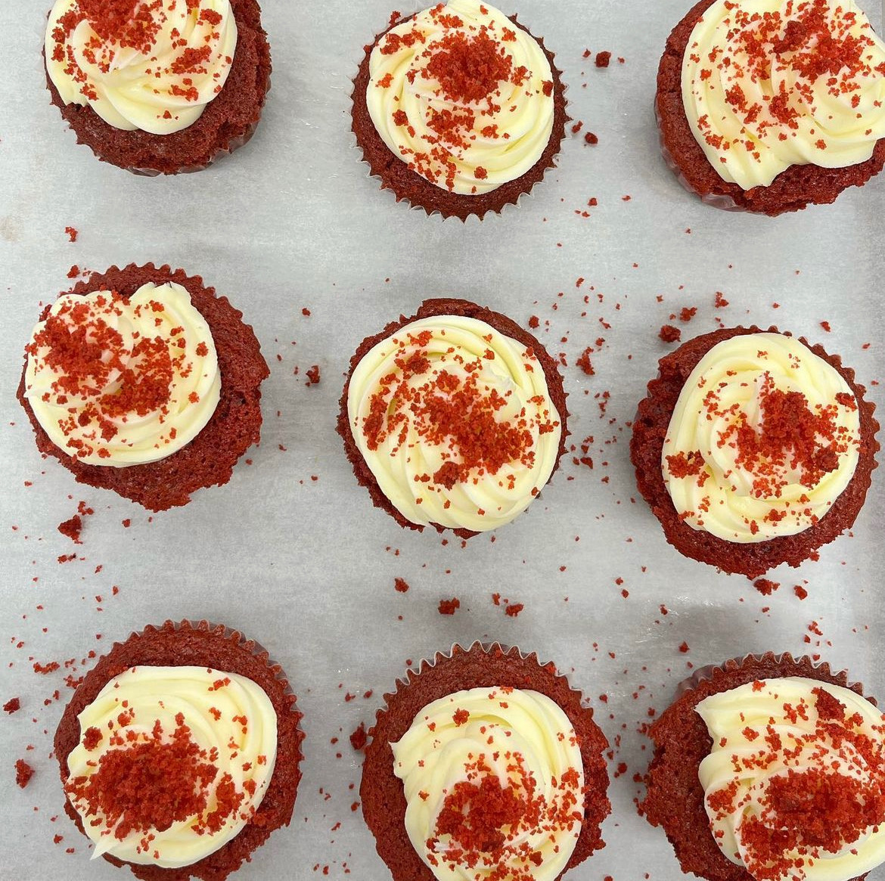
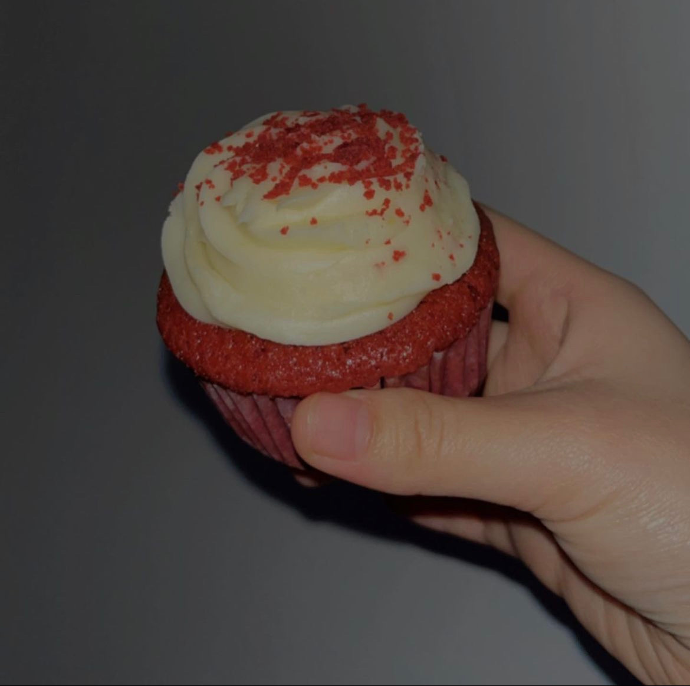

Red Velvet Cupcakes


Chef Soph's Red Velvet Cupcakes
A perfect way to end off a meal. A popular baked good amongst the many offered around. Topped with cream cheese icing and red velvet crumbs!
Ingredients For The Cake
- Flour
- Cocoa Powder
- Baking Soda
- Salt
- Sugar
- Butter
- Eggs
- Sour Cream
- Milk
- Red Food Coloring
- Vanilla Extract
Ingredients For The Frosting
- Cream Cheese
- Butter
- Sour Cream
- Vanilla
- Confectioner Sugar
Baking Instructions
- Mix the dry ingredients for the cake. Beat the sugar and butter together, then beat in the eggs. Add the remaining wet ingredients, then add the dry mixture to the wet mixture.
- Pour the batter into the wells of a prepared muffin or cupcake tin. Bake until a toothpick comes out clean.
- Beat the frosting ingredients together until light and fluffy. Frost the (completely cooled) cupcakes.